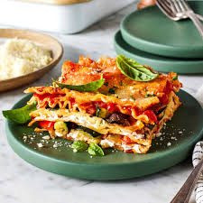
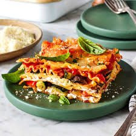

Lasagna is a traditional Italian dish made by layering wide, flat pasta sheets with rich meat or vegetable sauces, creamy béchamel, and melted cheese—typically mozzarella and parmesan. Baked to perfection, it's a hearty, comforting meal known for its indulgent layers and robust flavors. Originating from the region of Emilia-Romagna, lasagna has evolved globally with countless regional variations. It’s both a culinary staple and a crowd-pleaser, often enjoyed during festive gatherings and family dinners.
Ingredients:
Meat:½ pound ground pork, ½ pound lean ground beef.
Onion:A diced onion.
Canned Tomatoes:a can of tomato sauce and a can of crushed tomatoes.
Fresh Herbs
Sugar:A dash of sugar balances out all of the acidity from the tomatoes.
Spices and Seasonings:An adequete amount of dried basil, dried oregano, salt, and black pepper.
Noodles:This recipe calls for uncooked noodles, but you can use the oven-ready variety to save time.
Cheese:The cheese layer is made up of cottage cheese and Parmesan. You'll also need shredded mozzarella.
Eggs:Eggs make the cheese layer extra creamy. Plus, they act as a binding agent (which means they hold the layer together).
Quick Q/A:
How Long It Takes To Cook Lasagna?
⇒ In an oven preheated to 375 degrees F, this homemade lasagna should be perfectly baked in about 50minutes (30-40 minutes covered, 5-10 minutes uncovered).
Directions:
Gather all ingredients.
Combine pork and ground beef in a large, deep skillet over medium-high heat; cook and stir until browned and crumbly, 5 to 7 minutes.
Add onion and cook until translucent, about 5 minutes.
Stir in crushed tomatoes, tomato sauce, 1 tablespoon fresh parsley, garlic, basil, salt, oregano, and sugar. Reduce heat to medium-low and simmer, stirring occasionally, for 30 minutes.
While the sauce is simmering, bring a large pot of lightly salted water to a boil. Cook lasagna noodles in the boiling water, stirring occasionally, until tender yet firm to the bite, 8 to 10 minutes. Drain and set aside. While the noodles are cooking, preheat the oven to 375 degrees F (190 degrees C).
Mix cottage cheese, Parmesan cheese, eggs, remaining 1 tablespoon fresh parsley, salt, and pepper in a large bowl until combined.
Assemble lasagna: Spread a spoon or two of sauce over the bottom of a 9x13-inch baking dish just to to coat it. Place two layers of noodles over the sauce to cover.
Layer with 1/2 of the cheese mixture, 1/2 of the remaining sauce, and 1/2 of the mozzarella cheese. Repeat layers once more using the remaining noodles, cheese mixture, sauce, and mozzarella. Cover the baking dish with aluminum foil.
Bake in the preheated oven for 30 to 40 minutes. Remove the foil and bake until cheese is golden brown, 5 to 10 more minutes.
Remove from the oven and let stand for 10 minutes before cutting and serving.
 
